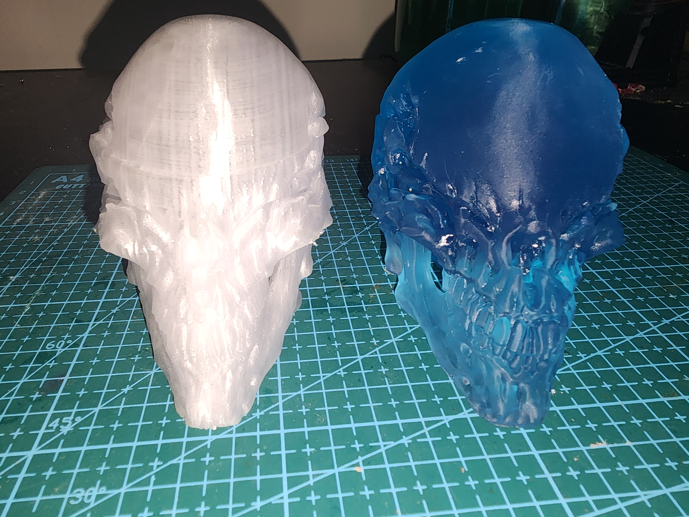
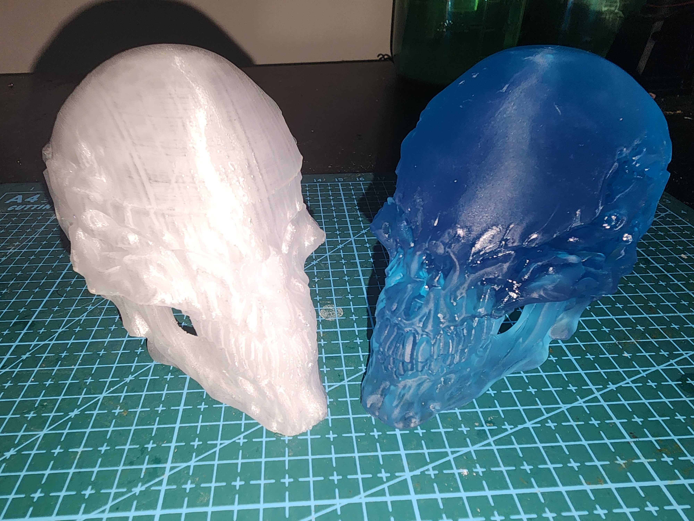
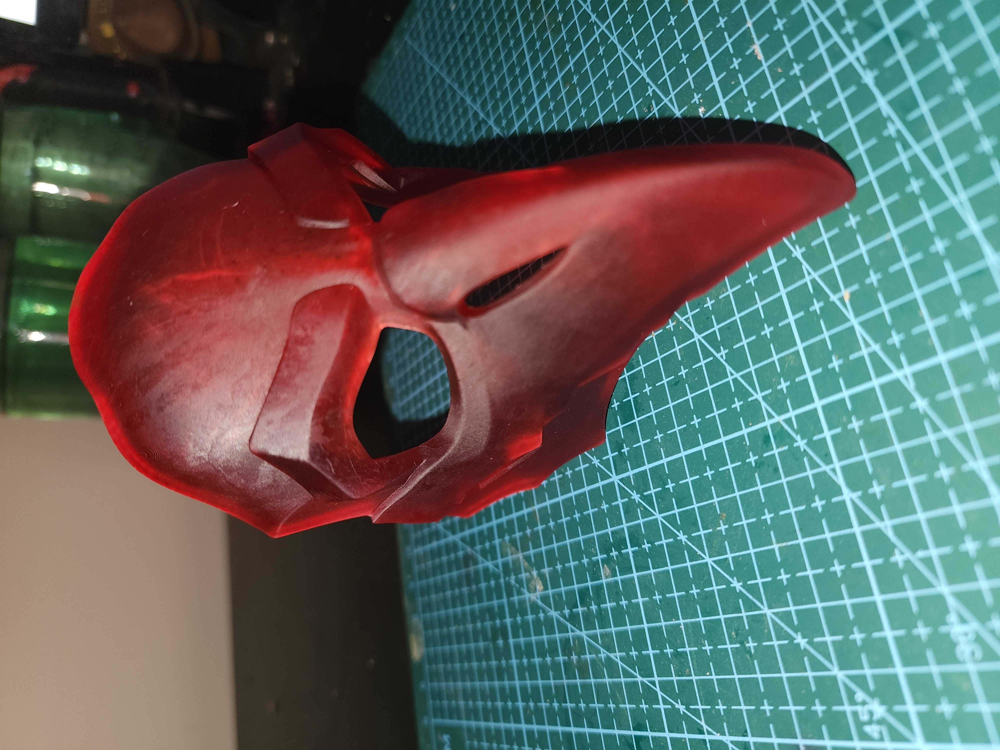
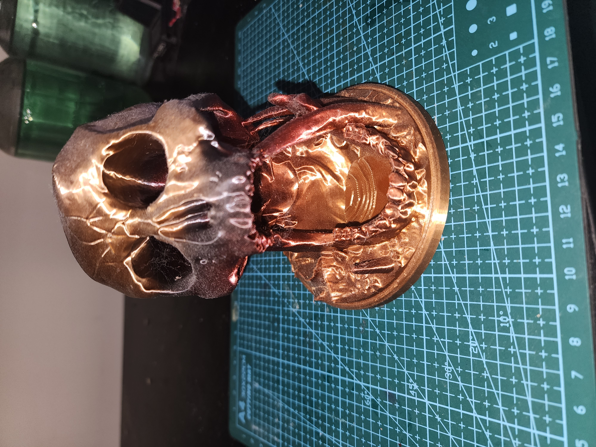

3D Printing has been a hobby of mine for several years now, it has allowed me to explore and use various materials assosiated with both FEM and Resin printing. Through this I was able to bring to life many of my ideas and projects while learning the difrences between the diffent printing styles and matirials.
FDM printers which stands for Fused Deposition Modeling are some of the most common types of 3D printers used by DIYers and Techs. This is due to the face that FDM printers can print in a wide set of materials all with their own properties like the durable shock absorbance of polycarbonate(pc) or Nylon, the elastisity of TPU or the ease reliability of PLA. With such wide and varied filamint types FDM is seen as the printing style for Maker/Tinkerers.
The FDM printing process works by heating a the plastic filamint to its melting point and extruding it through a small nozzle onto a build plate. Through calculated movements across the X, Y and Z axis the printer draws onto the build plate with the melted plastic layer by layer until the full modle is produced. Layers are often just 0.1mm thick and can take up to a few minutes to print per layer meaning that FDM can have the longest print times on largers more complicated prints that can streach to days. But on simple prints can be the fasts only taking minutes.
RDM VS. Resin

Resin

FEM
